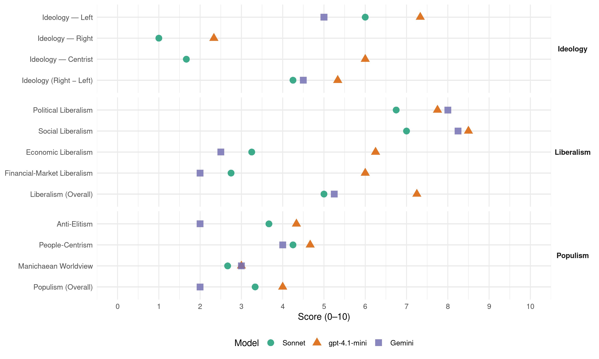

PS (Belgium, 1995)
manifesto_id 21322_199505
Get full text: This site shows derived annotations and short verbatim quotes only. The full manifesto text is © Manifesto Project / WZB — obtain it via manifesto-project.wzb.eu using the manifesto_id above.
Headline scores
| Dimension | Sonnet | gpt-4.1-mini | Gemini |
|---|---|---|---|
| Populism (Overall) | 3.3 | 4.0 | 2.0 |
| Anti-Elitism | 3.7 | 4.3 | 2.0 |
| People-Centrism | 4.2 | 4.7 | 4.0 |
| Manichaean Worldview | 2.7 | 3.0 | 3.0 |
| Ideology (Right − Left) | 4.2 | 5.3 | 4.5 |
| Liberalism (Overall) | 5.0 | 7.2 | 5.2 |
| Political Liberalism | 6.8 | 7.8 | 8.0 |
| Social Liberalism | 7.0 | 8.5 | 8.2 |
| Economic Liberalism | 3.2 | 6.2 | 2.5 |
| Financial-Market Liberalism | 2.8 | 6.0 | 2.0 |
Evidence per dimension
Economic Liberalism
Gemini · score 2.0 · verified · chunk 1
“l’économie soit au service de l’homme et non du marché”
Plus que jamais, nous entendons lutter pour que l’économie soit au service de l’homme et non du marché.
Gemini · score 2.0 · verified · chunk 2
“marché seul n’est pas efficient”
Nous l’avons dit, le marché seul n’est pas efficient, la dérégulation, la concurrence
Gemini · score 3.0 · verified · chunk 3
“détachée quand il le faut d’une emprise trop grande des lois du marché”
Une politique culturelle ambitieuse, détachée quand il le faut d’une emprise trop grande des lois du marché, ne constitue pas seulement une nécessité
Gemini · score 3.0 · verified · chunk 4
“véritable régulation du marché locatif”
volonté d’assurer une véritable régulation du marché locatif: la lutte contre la spéculation
gpt-4.1-mini · score 7.0 · verified · chunk 1
“Il faut soutenir et encourager les divers instruments publics à s’engager dans un processus de relance économique créatrice d’emplois”
Notre pays, comme l’Europe, a besoin d’une véritable politique de relance afin de traduire le mieux possible la reprise économique en créations d’emplois. Au niveau européen, il faut concrétiser le Livre Blanc de Jacques DELORS sur la croissance et l’emploi: cela implique notamment le dégagement de moyens financiers adaptés à l’ampleur des grandes infrastructures collectives à réaliser, comme le TGV et les réseaux de technologies de l’information. Dans notre pays, les entreprises publiques constitueront un maillon essentiel de cette politique de relance par leur participation aux grands réseaux transeuropéens. Compte tenu du rôle important joué par ces entreprises en matière de service aux usagers, de politique sociale et du développement de l’emploi, nous entendons soumettre tout processus européen de libéralisation à la reconnaissance préalable des notions de service universel, de contrôle public et d’entreprise publique. Il faut soutenir et encourager les divers instruments publics à s’engager dans un processus de relance économique créatrice d’emplois.
gpt-4.1-mini · score 7.0 · verified · chunk 2
“la dérégulation, la concurrence excessive conduisent à des déviances”
…le marché seul n’est pas efficient, la dérégulation, la concurrence excessive conduisent à des déviances. Pour lutter et prévenir de tels excès, nous réaffirmons la prédominance de l’Etat régulateur…
gpt-4.1-mini · score 7.0 · verified · chunk 3
“soutenir l’économie régionale et aider la recherche”
…Poursuivre la création d’emplois par les investissements régionaux. Les investissements réalisés ou subventionnés par le biais des politiques régionales… Soutenir l’économie régionale et aider la recherche…
gpt-4.1-mini · score 4.0 · verified · chunk 4
“la lutte contre la spéculation et le contrôle de l’évolution des prix”
la lutte contre la spéculation et le contrôle de l’évolution des prix devront se poursuivre et s’amplifier. Un observatoire régional des loyers devra être mis en place et un révision la loi sur les loyers réclamée au pouvoir fédéral.
Sonnet · score 3.0 · verified · chunk 1
“dérégulation économique et à la dilution de l’intérêt général”
face à la dérégulation économique et à la dilution de l’intérêt général, opposons le concept de développement durable et soutenable.
Sonnet · score 3.0 · verified · chunk 2
“Dérégulation, concurrence exacerbée et souvent imparfaite”
Dérégulation, concurrence exacerbée et souvent imparfaite, placent la réalisation du profit avant la satisfaction du consommateur dans la hiérarchie des priorités du producteur. Cette situation est inacceptable
Sonnet · score 4.0 · verified · chunk 3
“détachée quand il le faut d’une emprise trop grande des lois du marché”
Une politique culturelle ambitieuse, détachée quand il le faut d’une emprise trop grande des lois du marché, ne constitue pas seulement une nécessité artistique
Sonnet · score 3.0 · verified · chunk 4
“La production-distribution d’eau ne peut être un bien marchand”
L’eau potable et un bien social qui doit être accessible à tous. La production-distribution d’eau ne peut être un bien marchand constitutif de profits commerciaux
Financial-Market Liberalism
Gemini · score 1.0 · verified · chunk 1
“mondialisation de ta spéculation financière”
marquée par une dérégulation galopante et une mondialisation de ta spéculation financière, a produit un chômage
Gemini · score 3.0 · verified · chunk 2
“tarification des services bancaires”
relative aux services financiers. - examiner la procédure de tarification des services bancaires et le mécanismes des
Gemini · score 2.0 · verified · chunk 3
“l’emprise de plus en plus incontrôlée des pouvoirs financiers”
L’évolution de la politique mondiale, l’emprise de plus en plus incontrôlée des pouvoirs financiers sous l’influence des néo-libéraux, la montée de l’extrême droite
Gemini · score 2.0 · verified · chunk 4
“mobiliser l’épargne des ménages”
cette formule permet de mobiliser l’épargne des ménages à revenus moyens, tout en protégeant
gpt-4.1-mini · score 6.0 · verified · chunk 1
“lutter contre les fraudes fiscales et sociales”
Il est donc nécessaire d’alléger le coût supporté par le seul facteur travail et de trouver des alternatives pour assurer l’augmentation des recettes, celles-ci devant assurer le maintien des principes d’une sécurité sociale fédérale et, tout particulièrement, la couverture des régimes de pensions et soins de santé. Le Parti socialiste propose, notamment: * le maintien et l’accroissement du financement alternatif de la sécurité sociale. * l’élargissement de la perception des cotisations sur la valeur ajoutée des entreprises, qui permette une redistribution des charges entre les entreprises, sans coût supplémentaire pour le citoyen. * l’établissement d’une taxation sur les flux financiers. * la révision des exemptions des cotisations sociales patronales tenant compte de la réelle utilité de ces exemptions en termes économiques et notamment au niveau de la création d’emplois. * la poursuite et l’intensification efficiente de la lutte contre les fraudes fiscales et sociales.
gpt-4.1-mini · score 6.0 · verified · chunk 2
“examen de la procédure de tarification des services bancaires”
…nous souhaitons: - poursuivre la réflexion entamée par la proposition socialiste sur l’information relative aux services financiers. - examiner la procédure de tarification des services bancaires et le mécanismes des dates valeurs…
Sonnet · score 3.0 · verified · chunk 1
“mondialisation de ta spéculation financière”
marquée par une dérégulation galopante et une mondialisation de ta spéculation financière, a produit un chômage croissant depuis vingt ans
Sonnet · score 3.0 · verified · chunk 2
“libéralisation européenne de ce secteur risque”
La libéralisation européenne de ce secteur risque de conduire, et conduit déjà dans certains cas, à la négation de la vocation première du secteur, à savoir la mutualisation des risques
Sonnet · score 3.0 · verified · chunk 3
“la lutte contre la spéculation et le contrôle de l’évolution des prix”
la lutte contre la spéculation et le contrôle de l’évolution des prix devront se poursuivre et s’amplifier. Un observatoire régional des loyers devra être mis en place
Sonnet · score 2.0 · verified · chunk 4
“maintien du statut public pur de la CIBE”
Le P.S. insiste dès lors sur le maintien du statut public pur de la CIBE et de l’IBDE
Political Liberalism
Gemini · score 8.0 · verified · chunk 1
“démocratie ne se réduit pas à l’exercice du vote”
forger les jugements et à permettre la délibération tant il est vrai que la démocratie ne se réduit pas à l’exercice du vote.
Gemini · score 8.0 · verified · chunk 2
“respect des droits de la défense”
accélérer le jugement des délits, dans le respect des droits de la défense. La formation des policiers
Gemini · score 8.0 · verified · chunk 3
“nourris aux mécanismes et aux lois de la démocratie”
des citoyens critiques et responsables, nourris aux mécanismes et aux lois de la démocratie, dans la recherche d’une responsabilisation politique commune.
Gemini · score 8.0 · verified · chunk 4
“respect des droits de la défense”
accélération des procédures pénales dans le respect des droits de la défense. L’Etat fédéral devra y veiller.
gpt-4.1-mini · score 8.0 · verified · chunk 1
“la démocratie ne se réduit pas à l’exercice du vote”
Le projet démocratique part d’abord d’une parole libérée qui rencontre l’écoute dans un dialogue continu. Le débat dans la cité est la première forme de participation politique qui contribue à forger les jugements et à permettre la délibération tant il est vrai que la démocratie ne se réduit pas à l’exercice du vote. La démocratie de proximité ne relève aucunement d’une atomisation de la société, ni d’une démission du politique, mais constitue un enjeu fondamental dans la relation entre l’individu et la société.
gpt-4.1-mini · score 8.0 · verified · chunk 2
“le vote est un acte démocratique accompli le même jour dans les mêmes conditions d’égalité”
…Le vote est un acte démocratique accompli le même jour dans les mêmes conditions d’égalité par des millions de citoyens qui expriment leur choix de société, de valeurs et de personnes. Maintenir le vote obligatoire c’est manifester notre attachement…
gpt-4.1-mini · score 8.0 · verified · chunk 3
“nourris aux mécanismes et aux lois de la démocratie”
…faire des citoyens critiques et responsables, nourris aux mécanismes et aux lois de la démocratie, dans la recherche d’une responsabilisation politique commune. Ainsi, la nouvelle Communauté française…
gpt-4.1-mini · score 7.0 · verified · chunk 4
“le droit è l’aide sociale ne doit en aucun cas réduire l’allocataire au statut d’assisté”
Le droit è l’aide sociale ne doit en aucun cas réduire l’allocataire au statut d’assisté mais plutôt le reconnaître comme partenaire d’un projet d’avenir.
Sonnet · score 7.0 · verified · chunk 1
“la démocratie ne se réduit pas à l’exercice du vote”
tant il est vrai que la démocratie ne se réduit pas à l’exercice du vote. La démocratie de proximité ne relève aucunement d’une atomisation
Sonnet · score 7.0 · verified · chunk 2
“contrôle démocratique doit être poursuivi”
l’effort de réorganisation et de contrôle démocratique doit être poursuivi. Tout commence par l’éducation
Sonnet · score 7.0 · verified · chunk 3
“nourris aux mécanismes et aux lois de la démocratie”
C’est enfin de tous les élèves-étudiants francophones qu’il convient de faire des citoyens critiques et responsables, nourris aux mécanismes et aux lois de la démocratie
Sonnet · score 6.0 · verified · chunk 4
“l’accès à la nationalité belge est un droit démocratique”
Les Socialistes s’engagent à mettre en œuvre une procédure rapide tant il est vrai que l’accès à la nationalité belge est un droit démocratique
Liberalism (Overall)
Gemini · score 5.0 · verified · chunk 1
“démocratie ne se réduit pas à l’exercice du vote”
forger les jugements et à permettre la délibération tant il est vrai que la démocratie ne se réduit pas à l’exercice du vote.
Gemini · score 5.0 · verified · chunk 2
“marché seul n’est pas efficient”
Nous l’avons dit, le marché seul n’est pas efficient, la dérégulation, la concurrence
Gemini · score 5.0 · verified · chunk 3
“les valeurs démocratiques de liberté, de justice”
les valeurs démocratiques de liberté, de justice, l’égalité de traitement entre hommes et femmes sont des valeurs fondamentales.
Gemini · score 6.0 · verified · chunk 4
“respect des droits de la défense”
accélération des procédures pénales dans le respect des droits de la défense. L’Etat fédéral devra y veiller.
gpt-4.1-mini · score 8.0 · verified · chunk 1
“la démocratie ne se réduit pas à l’exercice du vote”
Le projet démocratique part d’abord d’une parole libérée qui rencontre l’écoute dans un dialogue continu. Le débat dans la cité est la première forme de participation politique qui contribue à forger les jugements et à permettre la délibération tant il est vrai que la démocratie ne se réduit pas à l’exercice du vote. La démocratie de proximité ne relève aucunement d’une atomisation de la société, ni d’une démission du politique, mais constitue un enjeu fondamental dans la relation entre l’individu et la société.
gpt-4.1-mini · score 7.0 · verified · chunk 2
“le marché seul n’est pas efficient, la dérégulation, la concurrence excessive”
…le marché seul n’est pas efficient, la dérégulation, la concurrence excessive conduisent à des déviances. Pour lutter et prévenir de tels excès, nous réaffirmons la prédominance de l’Etat régulateur…
gpt-4.1-mini · score 8.0 · verified · chunk 3
“lutte contre la marginalisation sociale et l’exclusion culturelle”
…tels que la lutte contre la marginalisation sociale et l’exclusion culturelle ainsi que pour la responsabilisation politique, peuvent être affirmés dès l’enfance, et ce pour tous les francophones…
gpt-4.1-mini · score 6.0 · verified · chunk 4
“le droit è l’aide sociale ne doit en aucun cas réduire l’allocataire au statut d’assisté”
Le droit è l’aide sociale ne doit en aucun cas réduire l’allocataire au statut d’assisté mais plutôt le reconnaître comme partenaire d’un projet d’avenir.
Sonnet · score 5.0 · verified · chunk 1
“démocratie de proximité”
La démocratie de proximité ne relève aucunement d’une atomisation de la société, ni d’une démission du politique
Sonnet · score 5.0 · verified · chunk 2
“démocratie politique et l’exercice de la citoyenneté”
La démocratie politique et l’exercice de la citoyenneté ne peuvent exister sans démocratie économique et sociale
Sonnet · score 5.0 · verified · chunk 3
“nourris aux mécanismes et aux lois de la démocratie”
C’est enfin de tous les élèves-étudiants francophones qu’il convient de faire des citoyens critiques et responsables, nourris aux mécanismes et aux lois de la démocratie
Sonnet · score 5.0 · verified · chunk 4
“Le principe d’égalité des sexes est fondamental”
Une femme égale un homme. Le principe d’égalité des sexes est fondamental, il guidera toutes les actions promues par les socialistes
Anti-Elitism
Gemini · score 3.0 · verified · chunk 1
“gestion exclusive, notamment patronale de la société”
Contrairement à ceux qui prônent une gestion exclusive, notamment patronale de la société de haut en bas, nous préconisons
Gemini · score 1.0 · verified · chunk 3
“l’emprise de plus en plus incontrôlée des pouvoirs financiers”
L’évolution de la politique mondiale, l’emprise de plus en plus incontrôlée des pouvoirs financiers sous l’influence des néo-libéraux, la montée de l’extrême droite
gpt-4.1-mini · score 6.0 · verified · chunk 1
“les idéologies néo-libérales relèguent l’homme dans un statut de sous-produit de l’économie”
Aussi, notre économie se détache de l’homme et impose des logiques purement financières. La croissance des richesses ne suffit plus à assurer un développement social et les idéologies néo-libérales relèguent l’homme dans un statut de sous-produit de l’économie. Le chômage atteint vingt millions de personnes en Europe, le risque de chômage et l’angoisse qu’il génère en touchent bien davantage.
gpt-4.1-mini · score 3.0 · verified · chunk 2
“messages démagogiques de peur et de haine diffusés par l’extrême droite”
…un travail d’information et de dialogue avec la population s’impose, afin de ramener le problème à sa juste mesure et de contrer les messages démagogiques de peur et de haine diffusés par l’extrême droite et une certaine presse. LUTTER CONTRE LES CAUSES PROFONDES DE LA DELINQUANCE…
gpt-4.1-mini · score 4.0 · verified · chunk 4
“la lutte contre la spéculation”
la lutte contre la spéculation et le contrôle de l’évolution des prix devront se poursuivre et s’amplifier. Un observatoire régional des loyers devra être mis en place et un révision la loi sur les loyers réclamée au pouvoir fédéral.
Sonnet · score 5.0 · verified · chunk 1
“l’agressivité d’un capitalisme débridé”
Nos sociétés avaient cru avoir triomphé de la pauvreté et de la marginalisation, l’agressivité d’un capitalisme débridé replace ces fléaux au cœur de nos cités.
Sonnet · score 3.0 · verified · chunk 2
“la dérégulation sauvage ainsi que pour défendre”
action vigoureuse et déterminée au niveau européen contre le libéralisme et la dérégulation sauvage ainsi que pour défendre la création d’un service public européen
Sonnet · score 3.0 · verified · chunk 3
“l’emprise de plus en plus incontrôlée des pouvoirs financiers”
L’évolution de la politique mondiale, l’emprise de plus en plus incontrôlée des pouvoirs financiers sous l’influence des néo-libéraux, la montée de l’extrême droite
Sonnet · score 2.0 · mixed · chunk 4
“la spéculation et le contrôle de l’évolution des prix”
la lutte contre la spéculation et le contrôle de l’évolution des prix devront se poursuivre et s’amplifier
Ideology — Centrist
gpt-4.1-mini · score 7.0 · verified · chunk 1
“la participation du citoyen augmente son autonomie et garantit sa liberté”
La politique est le cœur de la cité. La participation du citoyen augmente son autonomie et garantit sa liberté. Le projet démocratique part d’abord d’une parole libérée qui rencontre l’écoute dans un dialogue continu. Le débat dans la cité est la première forme de participation politique qui contribue à forger les jugements et à permettre la délibération tant il est vrai que la démocratie ne se réduit pas à l’exercice du vote.
gpt-4.1-mini · score 6.0 · verified · chunk 2
“la démocratie dans le sens d’une plus grande participation des consommateurs”
…la démocratie dans le sens d’une plus grande participation des consommateurs au processus de décision économique. En effet, le citoyen n’est finalement qu’un consommateur au sens large, y compris de services de l’Etat…
gpt-4.1-mini · score 5.0 · verified · chunk 4
“les Bruxellois”
Les initiatives locales, l’économie sociale et les services de proximité constituent une réponse non seulement aux besoins non rencontrés des Bruxellois mais également une contribution déterminante è la résorption du chômage.
Sonnet · score 2.0 · verified · chunk 1
“l’homme au centre de l’économie”
qui, en un mot, place l’homme au centre de l’économie. Notre conception de la consommation est une conception de solidarité
Sonnet · score 2.0 · verified · chunk 2
“priorité aux actions régionales”
Les principes suivants sont dès lors à appliquer: priorité aux actions régionales, qui doivent bénéficier du soutien du pouvoir fédéral
Sonnet · score 1.0 · verified · chunk 3
“une société plus juste et plus solidaire”
par le désir d’unir nos efforts dans l’aboutissement de projets communs, pour une société plus juste et plus solidaire
Ideology — Left
Gemini · score 8.0 · verified · chunk 1
“l’agressivité d’un capitalisme débridé”
triomphé de la pauvreté et de la marginalisation, l’agressivité d’un capitalisme débridé replace ces fléaux au cœur
Gemini · score 2.0 · verified · chunk 3
“l’emprise de plus en plus incontrôlée des pouvoirs financiers”
L’évolution de la politique mondiale, l’emprise de plus en plus incontrôlée des pouvoirs financiers sous l’influence des néo-libéraux, la montée de l’extrême droite
gpt-4.1-mini · score 8.0 · verified · chunk 1
“la solidarité entre les personnes, entre les groupes, entre les peuples, est un levier au service de l’idéal de justice sociale”
Une société injuste ruine elle-même le lien qui unit ses membres et les précipite dans les individualismes et les égoïsmes organisés. Les mutations de cette fin de siècle imposent un devoir urgent: celui de bâtir et de conforter une société plus juste. La solidarité entre les personnes, entre les groupes, entre les peuples, est un levier au service de l’idéal de justice sociale. A la mondialisation de l’économie, il faut opposer l’internationalisme de la solidarité.
gpt-4.1-mini · score 7.0 · verified · chunk 2
“la dérégulation, la concurrence excessive conduisent à des déviances”
…le marché seul n’est pas efficient, la dérégulation, la concurrence excessive conduisent à des déviances. Pour lutter et prévenir de tels excès, nous réaffirmons la prédominance de l’Etat régulateur…
gpt-4.1-mini · score 7.0 · verified · chunk 4
“lutte contre la pauvreté”
VAINCRE LA PAUVRETE PAR LA SOLIDARITE. La solidarité est le maître mot pour toute politique de lutte contre la pauvreté. Aussi, faut-il combattre prioritairement les mécanismes producteurs de la pauvreté et offrir aux personnes qui en sont déjà victimes, des réponses sociales efficaces et rapides.
Sonnet · score 7.0 · verified · chunk 1
“solidarité et la participation constituent les premiers”
Avec tous les socialistes du monde, nous affirmons que la solidarité et la participation constituent les premiers éléments du lien social.
Sonnet · score 5.0 · verified · chunk 2
“idéaux de JUSTICE SOCIALE et de SOLIDARITE”
Aucune prévention efficace n’est donc possible sans un projet de société axé sur les idéaux de JUSTICE SOCIALE et de SOLIDARITE défendus par le Parti Socialiste
Sonnet · score 6.0 · verified · chunk 3
“le maintien d’un secteur public fort”
le maintien d’un secteur public fort susceptible de jouer un rôle régulateur sur le plan économique et sur le plan de l’emploi
Sonnet · score 6.0 · verified · chunk 4
“L’économie sociale et les services de proximité”
Les initiatives locales, l’économie sociale et les services de proximité constituent une réponse non seulement aux besoins non rencontrés
Ideology (Right − Left)
Gemini · score 7.0 · verified · chunk 1
“l’agressivité d’un capitalisme débridé”
triomphé de la pauvreté et de la marginalisation, l’agressivité d’un capitalisme débridé replace ces fléaux au cœur
Gemini · score 2.0 · verified · chunk 3
“l’emprise de plus en plus incontrôlée des pouvoirs financiers”
L’évolution de la politique mondiale, l’emprise de plus en plus incontrôlée des pouvoirs financiers sous l’influence des néo-libéraux, la montée de l’extrême droite
gpt-4.1-mini · score 6.0 · verified · chunk 1
“la solidarité et la participation constituent les premiers éléments du lien social”
Avec tous les socialistes du monde, nous affirmons que la solidarité et la participation constituent les premiers éléments du lien social. UNE SOCIETE PLUS JUSTE, UN DEVOIR DES SOCIALISTES. Une société injuste ruine elle-même le lien qui unit ses membres et les précipite dans les individualismes et les égoïsmes organisés.
gpt-4.1-mini · score 5.0 · verified · chunk 2
“messages démagogiques de peur et de haine diffusés par l’extrême droite”
…un travail d’information et de dialogue avec la population s’impose, afin de ramener le problème à sa juste mesure et de contrer les messages démagogiques de peur et de haine diffusés par l’extrême droite et une certaine presse. LUTTER CONTRE LES CAUSES PROFONDES DE LA DELINQUANCE…
gpt-4.1-mini · score 5.0 · verified · chunk 4
“lutte contre la pauvreté”
VAINCRE LA PAUVRETE PAR LA SOLIDARITE. La solidarité est le maître mot pour toute politique de lutte contre la pauvreté. Aussi, faut-il combattre prioritairement les mécanismes producteurs de la pauvreté et offrir aux personnes qui en sont déjà victimes, des réponses sociales efficaces et rapides.
Sonnet · score 5.0 · verified · chunk 1
“idéologies néo-libérales relèguent l’homme”
les idéologies néo-libérales relèguent l’homme dans un statut de sous-produit de l’économie.
Sonnet · score 4.0 · verified · chunk 2
“idéaux de JUSTICE SOCIALE et de SOLIDARITE”
un projet de société axé sur les idéaux de JUSTICE SOCIALE et de SOLIDARITE défendus par le Parti Socialiste
Sonnet · score 4.0 · verified · chunk 3
“le maintien d’un secteur public fort”
le maintien d’un secteur public fort susceptible de jouer un rôle régulateur sur le plan économique et sur le plan de l’emploi
Sonnet · score 4.0 · verified · chunk 4
“L’économie sociale et les services de proximité”
Les initiatives locales, l’économie sociale et les services de proximité constituent une réponse non seulement aux besoins non rencontrés
Ideology — Right
gpt-4.1-mini · score 3.0 · verified · chunk 1
“utilisant le racisme et la haine. Toute complaisance à l’égard de l’extrême droite serait un délit contre la démocratie”
Il faut répondre par une opposition radicale à ces ambitions nourries d’opportunisme, utilisant le racisme et la haine. Toute complaisance à l’égard de l’extrême droite serait un délit contre la démocratie. En même temps, il importe de lutter contre les causes de ces déviances, faute de quoi notre combat contre leurs effets serait vide de sens.
gpt-4.1-mini · score 2.0 · verified · chunk 2
“messages démagogiques de peur et de haine diffusés par l’extrême droite”
…un travail d’information et de dialogue avec la population s’impose, afin de ramener le problème à sa juste mesure et de contrer les messages démagogiques de peur et de haine diffusés par l’extrême droite et une certaine presse. LUTTER CONTRE LES CAUSES PROFONDES DE LA DELINQUANCE…
gpt-4.1-mini · score 2.0 · verified · chunk 4
“lutte contre le racisme et la xénophobie”
les socialistes dans la fidélité è leur tradition, combattent le racisme, la xénophobie et luttent pour l’extension de la justice pour tous.
Sonnet · score 1.0 · verified · chunk 1
“lutte intensive contre l’immigration clandestine”
Le P.S. considère que la réussite des politiques d’intégration passe par une lutte intensive contre l’immigration clandestine.
Sonnet · score 1.0 · verified · chunk 2
“s’opposer à toute atteinte à leur statut”
s’opposer à toute atteinte à leur statut et à leur dignité, notamment en s’opposant aux propositions visant à instaurer l’amnistie pour faits de collaboration
Sonnet · score 1.0 · verified · chunk 3
“l’identité wallonne”
le Gouvernement wallon poursuivra la politique d’affirmation positive de l’identité régionale par son soutien à des publications appropriées, aux éléments fondamentaux de la culture wallonne
Sonnet · score 1.0 · verified · chunk 4
“lutte intensive contre toute tentative d’immigration clandestine”
la réussite des politiques d’intégration passe une lutte intensive contre toute tentative d’immigration clandestine
Manichaean Worldview
Gemini · score 3.0 · verified · chunk 1
“l’ère de l’économie barbare”
demain encore il le restera, pour que l’avenir ne soit plus jamais l’ère de l’économie barbare. Nous avons toujours
gpt-4.1-mini · score 5.0 · mixed · chunk 1
“Des partis ou groupements porteurs de visions poujadistes au mieux et fascistes au pire, tentent de s’installer”
Les incertitudes voire le désarroi que connaît une partie de la population fragilisée par 20 ans d’augmentation du chômage, favorisent l’affirmation d’expressions politiques antidémocratiques. Des partis ou groupements porteurs de visions poujadistes au mieux et fascistes au pire, tentent de s’installer dans le paysage politique communal, régional et fédéral. Il faut répondre par une opposition radicale à ces ambitions nourries d’opportunisme, utilisant le racisme et la haine.
gpt-4.1-mini · score 3.0 · verified · chunk 2
“messages démagogiques de peur et de haine diffusés par l’extrême droite”
…un travail d’information et de dialogue avec la population s’impose, afin de ramener le problème à sa juste mesure et de contrer les messages démagogiques de peur et de haine diffusés par l’extrême droite et une certaine presse. LUTTER CONTRE LES CAUSES PROFONDES DE LA DELINQUANCE…
Sonnet · score 4.0 · verified · chunk 1
“visions poujadistes au mieux et fascistes au pire”
Des partis ou groupements porteurs de visions poujadistes au mieux et fascistes au pire, tentent de s’installer dans le paysage politique
Sonnet · score 2.0 · verified · chunk 2
“messages démagogiques de peur et de haine”
contrer les messages démagogiques de peur et de haine diffusés par l’extrême droite et une certaine presse
Sonnet · score 2.0 · verified · chunk 3
“sous l’influence des néo-libéraux”
l’emprise de plus en plus incontrôlée des pouvoirs financiers sous l’influence des néo-libéraux, la montée de l’extrême droite et l’accentuation des exclusions
Sonnet · score 2.0 · mixed · chunk 4
“les plus faibles qui sont les plus précarisés”
Ce sont bien les plus faibles qui sont les plus précarisés. Dès lors, l’on ne peut aborder les questions de sécurité
People-Centrism
Gemini · score 4.0 · verified · chunk 1
“notre conviction qui nous rapprochera de nos citoyens”
c’est notre capacité à transmettre notre conviction qui nous rapprochera de nos citoyens. L’EMPLOI, NOTRE PRIORITE.
gpt-4.1-mini · score 7.0 · verified · chunk 1
“la solidarité et la participation constituent les premiers éléments du lien social”
Avec tous les socialistes du monde, nous affirmons que la solidarité et la participation constituent les premiers éléments du lien social. UNE SOCIETE PLUS JUSTE, UN DEVOIR DES SOCIALISTES. Une société injuste ruine elle-même le lien qui unit ses membres et les précipite dans les individualismes et les égoïsmes organisés.
gpt-4.1-mini · score 4.0 · verified · chunk 2
“le citoyen n’est finalement qu’un consommateur au sens large”
…la démocratie dans le sens d’une plus grande participation des consommateurs au processus de décision économique. En effet, le citoyen n’est finalement qu’un consommateur au sens large, y compris de services de l’Etat. La notion de citoyenneté économique est fondamentale…
gpt-4.1-mini · score 3.0 · verified · chunk 4
“les Bruxellois”
Les initiatives locales, l’économie sociale et les services de proximité constituent une réponse non seulement aux besoins non rencontrés des Bruxellois mais également une contribution déterminante è la résorption du chômage.
Sonnet · score 5.0 · verified · chunk 1
“l’économie soit au service de l’homme”
Plus que jamais, nous entendons lutter pour que l’économie soit au service de l’homme et non du marché.
Sonnet · score 4.0 · verified · chunk 2
“placer l’homme au centre de l’économie”
le P.S. défend l’idée d’une politique de la consommation progressiste et volontariste, qui prend en compte la qualité de la vie du consommateur… en un mot, place l’homme au centre de l’économie
Sonnet · score 4.0 · verified · chunk 3
“mobiliser toutes les énergies et toutes les solidarités”
Le PS garde pour objectif essentiel de mobiliser toutes les énergies et toutes les solidarités pour le maintien et surtout la création de nouveaux emplois
Sonnet · score 4.0 · verified · chunk 4
“un droit de l’homme qu’il faut garantir”
Pour les socialistes, la sécurité est un droit de l’homme qu’il faut garantir car en ce domaine comme dans bien d’autres
Populism (Overall)
Gemini · score 3.0 · verified · chunk 1
“l’ère de l’économie barbare”
demain encore il le restera, pour que l’avenir ne soit plus jamais l’ère de l’économie barbare. Nous avons toujours
Gemini · score 1.0 · verified · chunk 3
“l’emprise de plus en plus incontrôlée des pouvoirs financiers”
L’évolution de la politique mondiale, l’emprise de plus en plus incontrôlée des pouvoirs financiers sous l’influence des néo-libéraux, la montée de l’extrême droite
gpt-4.1-mini · score 6.0 · verified · chunk 1
“les idéologies néo-libérales relèguent l’homme dans un statut de sous-produit de l’économie”
Aussi, notre économie se détache de l’homme et impose des logiques purement financières. La croissance des richesses ne suffit plus à assurer un développement social et les idéologies néo-libérales relèguent l’homme dans un statut de sous-produit de l’économie. Le chômage atteint vingt millions de personnes en Europe, le risque de chômage et l’angoisse qu’il génère en touchent bien davantage.
gpt-4.1-mini · score 3.0 · verified · chunk 2
“messages démagogiques de peur et de haine diffusés par l’extrême droite”
…un travail d’information et de dialogue avec la population s’impose, afin de ramener le problème à sa juste mesure et de contrer les messages démagogiques de peur et de haine diffusés par l’extrême droite et une certaine presse. LUTTER CONTRE LES CAUSES PROFONDES DE LA DELINQUANCE…
gpt-4.1-mini · score 3.0 · verified · chunk 4
“la lutte contre la spéculation”
la lutte contre la spéculation et le contrôle de l’évolution des prix devront se poursuivre et s’amplifier. Un observatoire régional des loyers devra être mis en place et un révision la loi sur les loyers réclamée au pouvoir fédéral.
Sonnet · score 4.0 · verified · chunk 1
“capitalisme débridé replace ces fléaux”
l’agressivité d’un capitalisme débridé replace ces fléaux au cœur de nos cités. L’emploi reste la base essentielle de l’autonomie
Sonnet · score 3.0 · verified · chunk 2
“placer l’homme au centre de l’économie”
le P.S. défend l’idée d’une politique de la consommation progressiste et volontariste… place l’homme au centre de l’économie
Sonnet · score 3.0 · verified · chunk 3
“l’emprise de plus en plus incontrôlée des pouvoirs financiers”
L’évolution de la politique mondiale, l’emprise de plus en plus incontrôlée des pouvoirs financiers sous l’influence des néo-libéraux, la montée de l’extrême droite
Sonnet · score 2.0 · mixed · chunk 4
“la spéculation et le contrôle de l’évolution des prix”
la lutte contre la spéculation et le contrôle de l’évolution des prix devront se poursuivre et s’amplifier
Social Liberalism